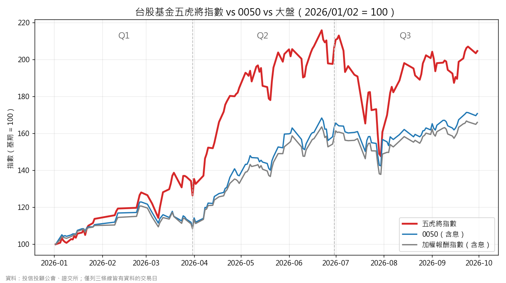

🐯 台股基金五虎將指數｜2026 Q3 季報
追蹤 5 檔台股主動式基金（等權重），每天用公會公布的淨值計算。本季成分：安聯台灣科技、路博邁台灣5G、野村台灣運籌、街口台灣、野村鴻運。
📊 一、Q1～Q3 成績單
| 期間 | 五虎將指數 | 0050（含息） | 大盤（含息） |
|---|---|---|---|
| Q1（1/2–3/31） | +26.44% | +9.59% | +8.35% |
| Q2（3/31–6/30） | +63.25% | +49.00% | +46.00% |
| Q3（6/30–9/30） | −0.87% | +4.57% | +4.93% |
| 今年累計（1/2–9/30） | +104.60% | +70.76% | +65.99% |
前兩季大幅領先，Q3 原地踏步，輸給 0050 約 5.4 個百分點；今年累計仍領先 0050 約 33.8 個百分點。

🥇 二、Q3 五檔基金誰贏誰輸
| 基金 | 6/30 淨值 | 9/30 淨值 | Q3 報酬 |
|---|---|---|---|
| 野村鴻運 | 278.19 | 307.84 | +10.66% |
| 野村台灣運籌 | 461.43 | 488.07 | +5.77% |
| 安聯台灣科技 | 833.51 | 810.52 | −2.76% |
| 街口台灣 | 216.16 | 201.61 | −6.73% |
| 路博邁台灣5G | 111.49 | 98.89 | −11.30% |
兩檔上漲、三檔下跌，互相抵銷後指數 −0.87%（五檔漲跌幅平均為 −0.87%，與指數一致）。
🎢 三、風險：最大回檔與波動
最大回檔＝從高點跌到低點最多跌了多少。波動＝日報酬的標準差（約略是平均每天上下震盪的幅度）。
| 指標 | 五虎將指數 | 0050 | 大盤 |
|---|---|---|---|
| Q3 最大回檔 | −30.69% | −13.97% | −14.59% |
| 今年累計最大回檔 | −31.60% | −15.37% | −15.72% |
| Q3 日波動 | 3.70% | 2.24% | 2.13% |
| 今年累計日波動 | 3.26% | 2.16% | 2.03% |
Q3 回檔期間：指數 7/3 高點 213.00 → 7/30 低點 147.64，之後 8～9 月回升到約 205。漲得多，跌也跌得凶：波動約為大盤的 1.7 倍，回檔約 2 倍。
🔭 四、下一次換股（2027 上半年）
- 每半年審核一次，只看 6 月底、12 月底。下次審核在 2026 年 12 月底，決定 2027H1 成分。
- Q3 沒有官方審核，不另外公布 9 月排名（避免用不完整資料誤導）。
- 評分＝近 1 年報酬 × 50% ＋ 近 3 年 × 30% ＋ 近 5 年 × 20%；成立未滿 5 年者不合格。
- 挑戰者要贏過現任一個「緩衝門檻」才換股，上次門檻為 20.20 分。
| 6/30 官方評分（131 檔合格） | 排名 | 分數 | 結果 |
|---|---|---|---|
| 安聯台灣科技 | #1 | 417.20 | 續抱 |
| 路博邁台灣5G | #2 | 414.36 | 續抱 |
| 野村台灣運籌 | #3 | 352.04 | 續抱 |
| 街口台灣 | #4 | 351.68 | 新進 |
| 野村鴻運 | #5 | 348.48 | 續抱 |
| 統一奔騰 | #17 | 306.33 | 換出 |
第 3～5 名只差約 3.6 分，非常接近。12 月底會不會換、換誰，要等當時的實際數字，現在無法預測。
📝 註腳與資料來源
- Q1、Q2 口徑說明：6/24 以前，歷史指數追蹤的路博邁是「N月配」級別（有配息、淨值被壓低），6/24 起已改為「T累積」並做接軌（指數不跳空）。因此 Q1、Q2 的指數報酬可能被低估；Q3 不受影響。本報告沿用網站上的歷史線，未重算。
- 資料缺口已補：指數 3/31 漏存（用公會當日淨值與 H1 當時份額補算為 126.44，同口徑已用 3/27、3/30 驗證可完全重現）；0050 在 9/29、9/30 缺值（用證交所收盤價 111.30、112.05 補上）。
- 指數歷史中仍有少數交易日無資料（Q3 約 12 個），最大回檔與波動以「三條線都有資料的日子」計算，屬近似值。
- 0050 與大盤皆為含息報酬，才能和累積型基金淨值公平比較。指數未扣除申購手續費與稅費。
- 資料來源：投信投顧公會（基金淨值）、台灣證券交易所（0050 收盤價、加權報酬指數）、五虎將指數網站。
⚠️ 以上為歷史資料整理，不代表未來績效，也不是投資建議。投資一定有風險，請自行評估。